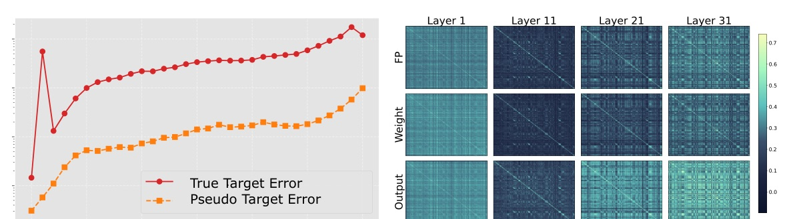
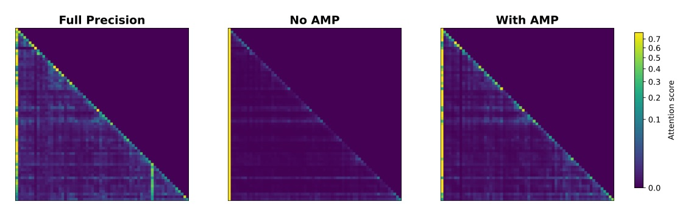

主角不是「再把 weight 壓低一點」，而是拆開 naive output alignment 在 1-bit regime 為什麼會壞。
1-bit PTQ 的真正敵人不是只剩一個 bit；是「target 漂移」加上「token geometry 被 MSE 扭歪」。
這篇用 true-target reconstruction 修 upstream error，再用 AMP mask 只放行不破壞 attention geometry 的 closed-form update。
||W - W_hat||，穩定但不直接保模型行為。||X_hat W - X_hat W_hat||，看似更 principled。X_hat W 改成 full-precision XW，顯式補上 inherited error。
(X-X_hat)W 是上游量化已留下的 inherited error。alpha_c 有 closed-form solution。B 因二值限制，用 row-wise optimal sign update。alpha_r 用 least-squares solution，實作中採 torch.linalg.lstsq 避免 pseudoinverse 不穩。L 得到候選 closed-form update。L_Reg 的下降方向。AMP 把「局部重建更好」改成「局部重建不能破壞 attention geometry」。
Proposition 1 給出非增加 L_Reg 的方向性保證；真正的說服力還是後面的 ablation。
| Setting | Prior best | Ours | Delta |
|---|---|---|---|
| C4 / OPT-1.3B | 27.70 | 24.69 | -3.01 |
| WikiText2 / OPT-1.3B | 26.40 | 24.30 | -2.10 |
| C4 / LLaMA-2-7B | 20.56 | 19.25 | -1.31 |
| WikiText2 / LLaMA-2-7B | 16.36 | 15.42 | -0.94 |
Prior best here is ARB-RC for these rows. Lower PPL is better.
| Model | Prior Avg | Ours Avg | Gain |
|---|---|---|---|
| LLaMA-2-7B | 47.19 | 48.42 | +1.23 |
| LLaMA-2-13B | 53.37 | 55.45 | +2.08 |
| LLaMA-3-8B | 44.19 | 45.09 | +0.90 |
| Dataset / model | ARB-RC | Ours | Delta |
|---|---|---|---|
| C4 / Qwen3-8B | 32.71 | 27.97 | -4.74 |
| WikiText2 / Qwen3-8B | 26.03 | 20.88 | -5.15 |
| AveQA / Qwen3-8B | 57.50 | 58.74 | +1.24 |
| Model / dataset | No AMP | AMP | Gain |
|---|---|---|---|
| LLaMA-2-7B / C4 | 29.12 | 19.25 | -9.87 |
| LLaMA-2-7B / WikiText2 | 26.24 | 15.42 | -10.82 |
| OPT-1.3B / C4 | 25.29 | 24.69 | -0.60 |
| OPT-1.3B / WikiText2 | 25.09 | 19.90 | -5.19 |
| Model / dataset | Pseudo target | True target | Gain |
|---|---|---|---|
| LLaMA-2-7B / C4 | 19.97 | 19.25 | -0.72 |
| LLaMA-2-7B / WikiText2 | 15.66 | 15.42 | -0.24 |
| OPT-1.3B / C4 | 27.20 | 24.69 | -2.51 |
| OPT-1.3B / WikiText2 | 25.29 | 19.90 | -5.39 |

| Model | ARB-X | ARB-RC | Ours |
|---|---|---|---|
| OPT-6.7B | 87m | 65m | 90m |
| LLaMA-2-7B | 91m | 54m | 73m |
| LLaMA-2-13B | 147m | 100m | 116m |
如果要把這篇用到 production quantization pipeline，先看 ablation，不要先看平均表。
AMP 在 LLaMA-2-7B 的差距太大，代表「保 token relation」可能比再微調 MSE target 更關鍵。
we show that this failure arises from two fundamental issues: error accumulation across layers and, more critically, anisotropic distortion of the representation space.
作者把 naive output-driven 1-bit PTQ 的失敗歸因於兩件事：逐層累積誤差，以及更關鍵的 representation space 各向異性失真。Abstract p.1-2
minimizing mean squared error (MSE) in Euclidean space prioritizes high-magnitude activation components while underweighting low-variance but structurally important directions.
MSE 會偏向高幅度 activation，忽略低變異但結構重要的方向；token geometry 被扭歪，不是輸出值平均小一點就能補回。§3.2 p.4
This leads to a directional filtering mechanism, where updates are accepted only if they are aligned with the descent direction of the regularizer.
AMP 的本質是方向過濾：只有不增加 geometry regularizer 的候選更新會被接受。§4.4 p.6
這篇最值得帶走的是診斷框架：在極低 bit PTQ 裡，output alignment 要同時對齊 true target 與 token geometry。